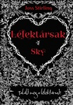
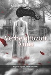
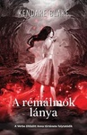
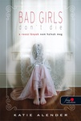
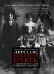
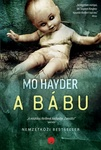
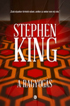
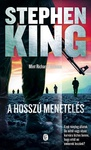
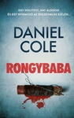
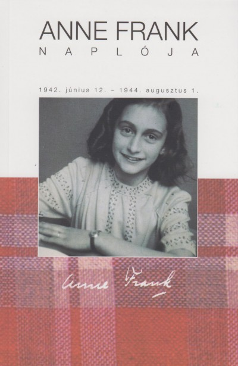

Felnőtt regények
| Szerző | Cím | Megjelenés | Leírás | Borító |
|---|---|---|---|---|
| Joss Stirling | Lélektársak sorozat | 2010-2016 | A sorozat hat kötete sorban: Sky, Phoenix, Crystal, Misty, Angel, Summer leírásuk |  |
| Kendare Blake | Vérbe öltözött Anna | 2011 | „Bejáratott kis történet lenne egy fiúról és egy lányról, ha a fiú nem megrögzött kísértetvadász, és ha a lány nincs arra kárhoztatva, hogy egy házban legyen az általa meggyilkoltakkal. Mondanom sem kell, Cas és Anna a kedvenc párosom. Biztos, hogy újraolvasom a könyvet.” – Holly Black, a New York Times bestsellerírója |  |
| A rémálmok lánya | 2012 | A Vérbe öltözött Anna folytatása Hónapok teltek el, amióta a vérbe öltözött lány, Anna Korlova becsapta maga mögött a Pokol kapuját, de Cas Lowood, a híres kísértetvadász nem tudja kiheverni elvesztését. Hiába mondják a barátai, hogy Anna miatta szállt alá, ő csak élőhalottként tengődik. A fiú tudja, hogy sosem talál rá a szerelemre egy élő lány oldalán, senki sem hasonlítható az ő halott Annájához. És csak őt látja mindenütt, vele alszik el és vele riad fel rémálmaiból. De valami nagyon nincs rendjén… Ezek nem képzelgések. Valahányszor megjelenik, látszik Annán, hogy a legválogatottabb kínzásokat kell kiállnia. Persze meg kell bűnhődnie tetteiért, de Cas úgy érzi, most rajta a sor, hogy viszonozza a lánynak, amit érte tett… |  | |
| J. A. Redmerski | Az örökké határa | 2013 | A fiú a hosszú utat választotta. A lány azt, amelyik sehová sem vezet. De a véletlen úgy hozta, hogy mind a kettő ugyanoda vitt… Amikor minden darabokra hullik, a szerelem akkor is megmarad… Camryn Bennett soha nem volt még boldogabb, mint most. Öt hónap telt el azóta, hogy egy távolsági buszon megismerkedett lelki társával, Andrew Parrish-sel – és nem az esküvő lesz az egyetlen különleges esemény az eljövendőkben. Camryn idegesen, mégis izgatottan várja, hogy leélhesse az életét Andrew-val – azzal a férfival, akiről a szíve mélyén tudja, hogy örökké szeretni fogja. Oly sok minden áll még előttük – mígnem váratlanul bekövetkezik a tragédia. Andrew nem érti, hogyan történhetett velük ilyesmi. Próbál továbblépni, és azt hiszi, Camryn is ezt teszi. De amikor rájön, hogy Camryn titokban iszonyatosan szenved, és a fájdalmat önpusztító módszerekkel igyekszik elnyomni, kész bármit megtenni, hogy visszahozza a lányt az életbe. Be akarja bizonyítani, hogy a szerelmük mindent legyőz. Andrew úgy dönt, hogy újabb, reménnyel és szenvedéllyel teli utazásra viszi Camrynt. Már csak arról kell meggyőznie a lányt, hogy vágjanak bele… | |
| Katie Alender | A rossz lányok nem halnak meg | 2009 | A szenvedélyt csupán egy hajszál választja el a megszállottságtól… Alexis kishúga, Kasey megszállottjává válik egy antik babának, de Alexis nem igazán foglalkozik a dologgal, mert Kasey egyébként is elég fura. Ami azt illeti, Alexist is furának tartják az iskolatársai és a szülei, sőt, még a saját goth haverjai is. A dolgok egyre különösebbek lesznek, amikor a régi házban, ahol a lányok laknak, különös dolgok történnek: ajtók nyílnak ki és csukódnak be maguktól, a víz felforr a meggyújtatlan gázon, és a kikapcsolt légkondicionáló úgy lehűti a levegőt, hogy látszik az ember lehelete is. És Kasey is megváltozik. Kék szemei zölddé válnak, elkezd régiesen beszélni és több óra is kiesik az emlékezetéből. A legnyugtalanítóbb azonban Kasey ellenséges viselkedése: az addig kedves, babaszerető kislány eltűnik, az új Kasey pedig dühös. Alexis az egyetlen, aki megállíthatja a húgát – de mi van, ha a zöldszemű lány már nem is Kasey? Mit tennél, ha a várost halálos veszély fenyegetné, de senki sem hinne neked? |  |
| John Cure | Hontalan lelkek | 1999 | Egy regény, amiben minden lehetséges. Egy amerikai kisváros, ahol szörnyű gyilkosságok történnek. Egy Átjáró, ami a szellemvilágot összeköti az élővel. Egy Dögkút, amiről legendák keringenek. Clive Wallace kiegyensúlyozott, idilli kapcsolatban él feleségével, Susannával, és két kisfiával, Timmel és Robinnal. Megszokott életük azonban váratlan fordulatot vesz, amikor a kisvárosban gyerekek tűnnek el nyomtalanul, miközben a szüleiket könyörtelenül lemészárolják. Egy borús délutánon Tim és két barátja sárkányt eregetni indulnak a közeli tisztásra, nem is sejtve, hogy halálos veszély leselkedik rájuk. Jack Homa, a város öregedő seriffje, próbál a rejtély megoldására bukkanni, azonban egyre nyilvánvalóbbá válik számára, hogy a kisváros lakói sötét titkot őriznek a múltból. Mindeközben Clive-nak szembe kell néznie szörnyű rémálmaival, és eltitkolt múltjával, hogy a családját megmenthesse a borzalmaktól. De kicsoda Gerald, aki kezében egy véres csákánnyal bújik meg a sötét árnyékban? És mit akarnak Robintól a halott gyerekek szellemei? |  |
| Mo Hayder | A bábu | 2013 | Valami nincs rendben a Beechway kórház pszichiátria osztályán. Az egyik páciens megcsonkítja magát, a másik öngyilkos lesz – mindkettő váratlan áramkimaradáskor történik. A figyelőkamerák semmit sem rögzítenek. A betegek azt suttogják, visszatért Maude, a gonosz szellem. Kétségbeesett tettekbe terrorizálja őket, éjjelente átkokat lehel a fülükbe. A kórház dolgozói nem hisznek a természetfeletti erőkben. De a páciensek határozottan állítják, hogy áramkimaradáskor mindig valami furcsát észlelnek. Aztán megtalálják azt a különleges rajzot, amelyet az öngyilkos beteg hagyott hátra. Egy alakot ábrázol, aki feltűnően hasonlít a nemrégiben gyógyultnak nyilvánított és elbocsátott Isaac Handelhez. Ilyen egyszerű lenne megoldás? Dehogy! A pokoli cselszövés éppen csak elkezdődött. |  |
| Stephen King | A ragyogás | 1977 | A ragyogás pompás rémtörténet, amelyben minden hitchcocki klisé adva van: a Colorado-hegység egyik magaslatán a hó által a világtól elzárt szálloda, melynek története hátborzongató rémségek sorozatából áll; egy ún. „második látással”, vagyis ragyogással megáldott-megvert túlérzékeny kisfiú, aki azt is megérzi, ami csak történni fog, s érzékenységével jelen idejű fenyegetésként éli át, ami a múltban már megesett; az alkoholizmusából éppen kigyógyult apa, akinek labilis idegrendszere fokozatosan tovább bomlik, mígnem a Szálloda (amelynek történetét meg akarja írni) szelleme teljesen hatalmába keríti, s ezzel a pusztító szellemmel azonosulva családja megsemmisítésére tör; az elhatalmasodó tébolynak már-már természetfölötti őrületté fokozása, s ennek megfelelően olyan „képsorok”, amelyekhez hasonlók csak a Hitchcock-filmek tetőpontján találhatók; s végül – ha nem is mindenki számára – a megmenekülés. |  |
| A hosszú menetelés | 1979 | Amerikát totális diktatúra uralja, a renitens polgárokat különítmény hurcolja el. A tizenéves fiúk számára egyetlen kiugrási lehetőség kínálkozik: a minden évben megrendezett Hosszú Menetelés, amelyet országszerte százezrek figyelnek, és a tévé is közvetít. Száz fiú indul útnak a megadott útvonalon, amelyet gyalogszerrel, legalább négy mérföld per órás átlagsebességgel kell teljesíteni. Csak egy győztes lehet, a lemaradókat ott helyben katonák végzik ki. Stephen King korai, álnéven írt gyöngyszeme az Éhezők viadalá-hoz hasonló, kegyetlen, kétségbeesett világot mutat be. |  | |
| Daniel Cole | Rongybaba | 2017 | Hat ember maradványaiból összevarrt egyetlen holttestet találnak egy londoni lakásban. Az áldozatot Rongybabának nevezik el. Ki követhette el ezt a borzalmat? Van-e összefüggés a bizarr eset és a pár évvel korábbi gyilkosságsorozat közt, amely miatt William „Wolf” Fawkes nyomozót kényszer-gyógykezelésre ítélték? William és társa, Emily Baxter őrmester nyomozását levakarhatatlan sajtóhiénák hada követi – a „Rongybabás gyilkos” eközben bestiális listát küld a vérszagra gyűlő újságíróknak: hat ember neve szerepel rajta, és a meggyilkolásuk tervezett időpontja… Mi kapcsolja össze a hat áldozatot? Miközben Wolfék versenyt futnak az idővel, a gyilkos valahol a közelben lapul… |  |
| Anne Frank | Anne Frank naplója | 1947 | Anne Frank 1942. június 12. és 1944. augusztus elseje között vezetett naplót: kezdetben csak magának írogatott, később, amikor megérett benne az elhatározás, hogy híres írónő lesz, elővette régi írásait és módszeresen átírta, javítgatta őket. Az volt a terve, hogy naplója alapján könyvet ír a háborúról, és hű képet fest benne a német megszállás éveiről Hollandiában. Korai halála - nem sokkal tizenhatodik születésnapja előtt vesztette életét a Bergen-Belsen-i koncentrációs táborban - megakadályozta terve megvalósításában. Anne Frank naplója örök érvényű olvasmány, egyaránt szól az övéihez, hasonló gondokkal küszködő fiatalokhoz, az idősebbekhez, akik szeretnék jobban megérteni őket, és szól mindazokhoz, akik tudni akarják, mi történt a Prinsengracht 263. hátsó traktusában bujkáló családokkal a hitleri megszállás alatt álló Amszterdamban. |  |